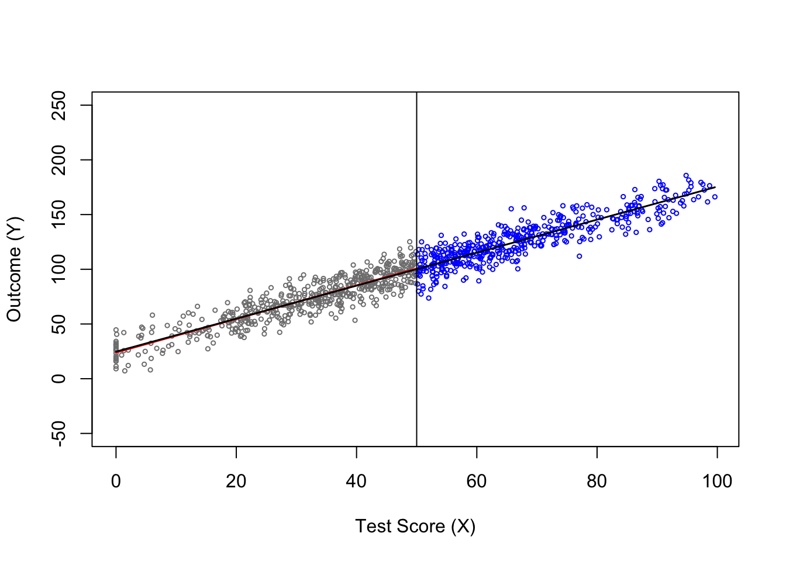
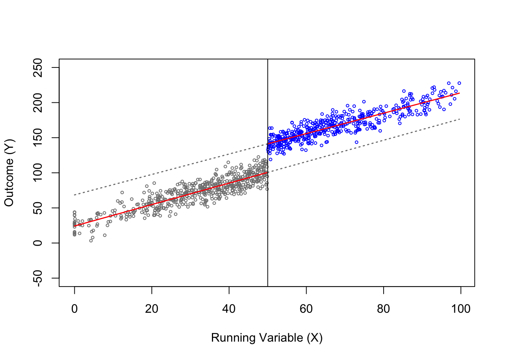
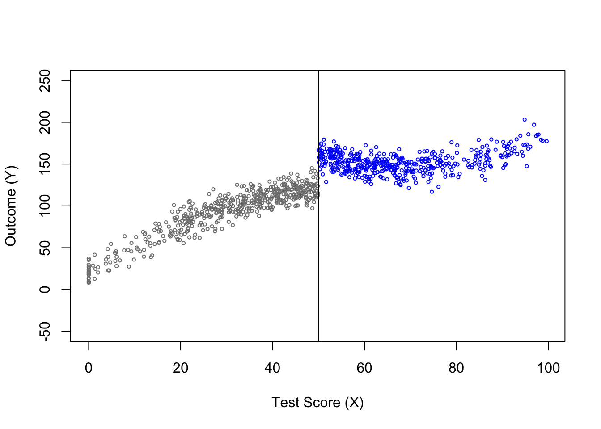
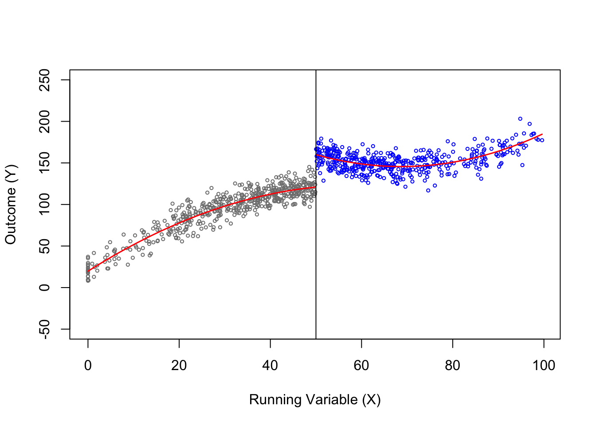
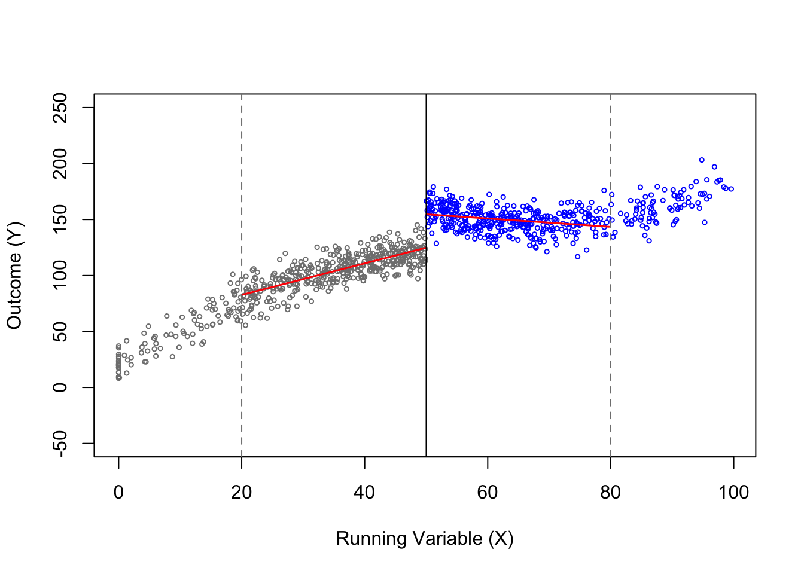
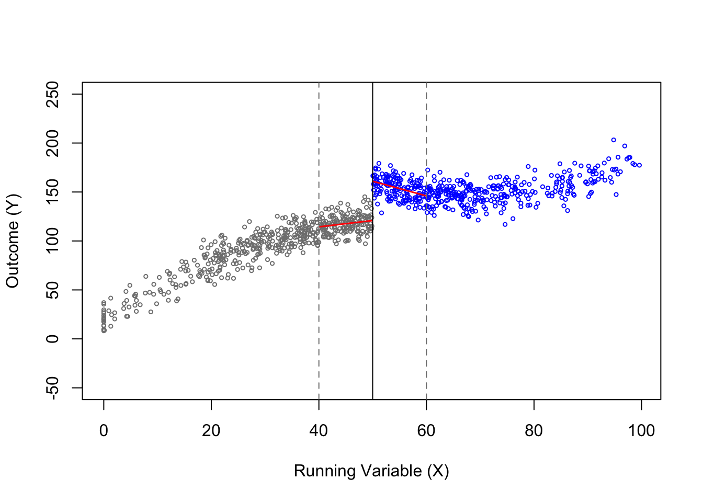

Regression Discontinuity Design (RDD)
A regression discontinuity design (RDD) uses one or more jumps in how a policy is assigned to estimate a causal effect (Wooldridge 2025). It cannot answer every causal question, but where it applies, its results are almost as convincing as those of a randomized trial (Angrist and Pischke 2015, 166–67).
Concept
- Running Variable (\(X_i\)): The variable that determines treatment (Angrist and Pischke 2015). Also called the forcing or assignment variable.
- Cutoff (\(c\)): the known value of \(X_i\) at which treatment switches on. Units just below and just above \(c\) are assumed to be similar, so comparing them works like a local experiment.
- Treatment (\(D_i\)): a binary indicator that equals 1 if unit \(i\) is treated and 0 otherwise.
- Bandwidth (\(h\)): the range of the running variable around the cutoff used to estimate the local treatment effect (see the non-parametric example).
Fuzzy RDD
Crossing the cutoff only changes the probability of treatment, so some units below \(c\) are treated or some units above \(c\) are not: \[ \lim_{x \downarrow c} P(D_i = 1 \mid X_i = x) \neq \lim_{x \uparrow c} P(D_i = 1 \mid X_i = x) \] The treatment effect is the jump in the outcome divided by the jump in the treatment probability at \(c\). This ratio is the LATE for compliers at the cutoff.
Continuity Assumption (CA)
The key assumption is that the relationship between the potential outcomes and the running variable has no jump. Formally, the conditional mean functions of \(Y_i(0)\) and \(Y_i(1)\) given \(X_i\) must be continuous at \(x = c\). Because the cutoff is usually set arbitrarily, one often assumes that both functions are continuous over the whole range of \(X_i\), but continuity at \(c\) is all the formal assumption needs (Wooldridge 2025). Under this assumption, any jump in the observed outcome at \(c\) is caused by the treatment.
Linear Parametric Approach
The parametric approach (also called regression based approach) assumes that the relationship between \(X\) and \(Y\) on each side of the cutoff can be described well by a linear function. If the relationship is curved, see the polynomial parametric approach. If we do not want to assume a functional form for the whole range of \(X\), we can use the non-parametric approach.
The running variable is drawn as \(X_i \sim N(50, 25^2)\) and kept between 0 and 100, the cutoff is \(c = 50\), and units with \(X_i > c\) are treated (\(D_i = 1\)) while all others are untreated (\(D_i = 0\)). We estimate a linear regression with a separate slope on each side of the cutoff: \[ Y_i = \beta_0 + \beta_1 X_i + {\color{red}\beta_2} D_i + \beta_3 X_i \times D_i + \varepsilon_i \]
Outcome without and with a jump at the cutoff
# Setup: simulate the data
set.seed(1234)
n <- 1000
x <- rnorm(n, mean = 50, sd = 25)
x[x < 0] <- 0
x <- x[x <= 100]
# Set the cutoff at c = 50. Treated if X > c
c <- 50
D <- ifelse(x > c, 1, 0)
# Panel (a): potential outcome Y1 not jumping at cutoff
effect <- 0
y1 <- 25 + effect * D + 1.5 * x + rnorm(length(x), mean = 0, sd = 10)
df <- data.frame(x, D, y1)
# Linear fits: control group only and full sample
fit0 <- lm(y1 ~ x, data = df[df$D == 0, ])
fitall <- lm(y1 ~ x, data = df)
x0 <- range(df$x[df$D == 0])
xall <- range(df$x)
plot(df$x, df$y1,
col = ifelse(df$D == 1, "blue", "gray50"),
pch = 1, cex = 0.5,
ylim = c(-50, 250),
xlab = "Running Variable (X)", ylab = "Outcome (Y)")
lines(x0, predict(fit0, newdata = data.frame(x = x0)), col = "red", lwd = 1.5)
lines(xall, predict(fitall, newdata = data.frame(x = xall)), col = "black", lwd = 1.5)
abline(v = c)
# Panel (b): treatment at the cutoff
effect <- 40
y1 <- 25 + effect * D + 1.5 * x + rnorm(length(x), mean = 0, sd = 10)
df <- data.frame(x, D, y1)
# Linear fits: control group only and full sample
fit0 <- lm(y1 ~ x, data = df[df$D == 0, ])
x0 <- range(df$x[df$D == 0])
fit1 <- lm(y1 ~ x, data = df[df$D == 1, ])
x1 <- range(df$x[df$D == 1])
plot(df$x, df$y1,
col = ifelse(df$D == 1, "blue", "gray50"),
pch = 1, cex = 0.5,
ylim = c(-50, 250),
xlab = "Running Variable (X)", ylab = "Outcome (Y)")
lines(x0, predict(fit0, newdata = data.frame(x = x0)), col = "red", lwd = 1.5)
lines(x1, predict(fit1, newdata = data.frame(x = x1)), col = "red", lwd = 1.5)
# Dotted: each side's fit extended across the cutoff
x0_ext <- c(c, max(df$x))
x1_ext <- c(min(df$x), c)
lines(x0_ext, predict(fit0, newdata = data.frame(x = x0_ext)), col = "gray50", lwd = 1.5, lty = 3)
lines(x1_ext, predict(fit1, newdata = data.frame(x = x1_ext)), col = "gray50", lwd = 1.5, lty = 3)
abline(v = c)

Regression
reg <- lm(y1 ~ x * D, data = df)
summary(reg)$coefficients Estimate Std. Error t value Pr(>|t|)
(Intercept) 24.22259284 1.10595877 21.90190 9.264013e-87
x 1.52707216 0.03268169 46.72561 7.168476e-251
D 44.31376202 2.76292525 16.03871 1.523066e-51
x:D -0.07199799 0.04918533 -1.46381 1.435687e-01Polynomial Parametric Approach
The running variable, cutoff and treatment are the same as before, but now each side of the cutoff follows its own quadratic curve. The outcome is concave below the cutoff and convex above it, with a treatment effect of 40 at \(c\): \[ Y_i = \begin{cases} 120 + 0.5 (X_i - c) - 0.03 (X_i - c)^2 + \varepsilon_i & \text{if } X_i \leq c \\ 160 - 1.5 (X_i - c) + 0.04 (X_i - c)^2 + \varepsilon_i & \text{if } X_i > c \end{cases} \] We estimate each side by a quadratic regression in the centered running variable: \[ Y_i = \beta_0 + \beta_1 (X_i - c) + \beta_2 (X_i - c)^2 + {\color{red}\beta_3} D_i + \beta_4 (X_i - c) \times D_i + \beta_5 (X_i - c)^2 \times D_i + \varepsilon_i \]
Different quadratic curve on each side of the cutoff
# Uses x, D and c from the linear simulation
effect <- 40
x_c <- x - c
y1 <- 120 + effect * D + 0.5 * x_c - 0.03 * x_c^2 - 2 * x_c * D + 0.07 * x_c^2 * D +
rnorm(length(x), mean = 0, sd = 10)
df <- data.frame(x, x_c, D, y1)
# Panel (a): simulated data
plot(df$x, df$y1,
col = ifelse(df$D == 1, "blue", "gray50"),
pch = 1, cex = 0.5,
ylim = c(-50, 250),
xlab = "Running Variable (X)", ylab = "Outcome (Y)")
abline(v = c)
# Panel (b): quadratic fits on each side of the cutoff
fit0 <- lm(y1 ~ x + I(x^2), data = df[df$D == 0, ])
x0 <- seq(min(df$x[df$D == 0]), max(df$x[df$D == 0]), length.out = 100)
fit1 <- lm(y1 ~ x + I(x^2), data = df[df$D == 1, ])
x1 <- seq(min(df$x[df$D == 1]), max(df$x[df$D == 1]), length.out = 100)
plot(df$x, df$y1,
col = ifelse(df$D == 1, "blue", "gray50"),
pch = 1, cex = 0.5,
ylim = c(-50, 250),
xlab = "Running Variable (X)", ylab = "Outcome (Y)")
lines(x0, predict(fit0, newdata = data.frame(x = x0)), col = "red", lwd = 1.5)
lines(x1, predict(fit1, newdata = data.frame(x = x1)), col = "red", lwd = 1.5)
abline(v = c)

Regression
reg <- lm(y1 ~ (x_c + I(x_c^2)) * D, data = df)
summary(reg)$coefficients Estimate Std. Error t value Pr(>|t|)
(Intercept) 120.96007584 1.082500142 111.741395 0.000000e+00
x_c 0.56454743 0.109110151 5.174106 2.782031e-07
I(x_c^2) -0.02921792 0.002206442 -13.242095 6.446680e-37
D 39.06603274 1.578454002 24.749554 3.081358e-105
x_c:D -2.09810863 0.168824873 -12.427722 5.165508e-33
I(x_c^2):D 0.07009969 0.003596315 19.492086 1.130981e-71Polynomial Non-parametric Approach
In case we never observe the control outcome to the left or right of \(c\), we cannot check whether the fitted lines have the right functional form there. For this reason, the sharp RDD literature recommends local linear regression (LLR), which only uses observations close to the cutoff on both sides. The bandwidth \(h > 0\) sets how close is close enough, and all observations outside the window are dropped (Wooldridge 2025, 708): \[ Y_i = \beta_0 + \beta_1 (X_i - c) + {\color{red}\beta_2} D_i + \beta_3 (X_i - c) \times D_i + \varepsilon_i \quad \text{for } c - h \leq X_i \leq c + h \]
Local linear fits with a bigger and a smaller bandwidth
# Uses df and c from the quadratic simulation
# Set the two bandwidths
h_big <- 30
h_small <- 10
for (h in c(h_big, h_small)) {
# Observations within the bandwidth on each side
left <- df[df$D == 0 & df$x >= c - h, ]
right <- df[df$D == 1 & df$x <= c + h, ]
# Linear fit on each side
fit0 <- lm(y1 ~ x, data = left)
fit1 <- lm(y1 ~ x, data = right)
x0 <- range(left$x)
x1 <- range(right$x)
plot(df$x, df$y1,
col = ifelse(df$D == 1, "blue", "gray50"),
pch = 1, cex = 0.5,
ylim = c(-50, 250),
xlab = "Running Variable (X)", ylab = "Outcome (Y)")
lines(x0, predict(fit0, newdata = data.frame(x = x0)), col = "red", lwd = 1.5)
lines(x1, predict(fit1, newdata = data.frame(x = x1)), col = "red", lwd = 1.5)
abline(v = c)
abline(v = c(c - h, c + h), lty = 2, col = "gray50")
}

Regression
local_rdd <- function(h) {
sub <- df[abs(df$x_c) <= h, ]
reg <- lm(y1 ~ x_c * D, data = sub)
c(h = h,
n = nrow(sub),
estimate = unname(coef(reg)["D"]),
std.error = summary(reg)$coefficients["D", "Std. Error"])
}
rbind(local_rdd(h_big), local_rdd(h_small)) h n estimate std.error
[1,] 30 785 29.79645 1.354437
[2,] 10 317 40.11377 2.084766Learning Resources
- Causal Inference: The Mixtape, Chapter 6: Regression Discontinuity (Scott Cunningham)
- The Effect, Chapter 20: Regression Discontinuity (Nick Huntington-Klein)